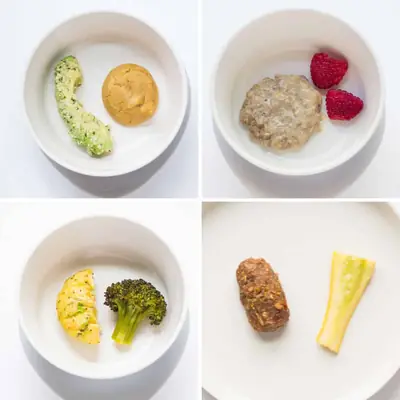

Best Healthy Baby Snacks

Ingredients
- 1 tablespoon Cooked salmon or sardines (fresh or canned)
- 3 tablespoon Edamame - Flatten with your fingers to split in half.
- 1 tablespoon Ground beef, chicken, or turkey crumbles
- 1 Lentil balls
- 1 strip Tofu
- 1/4 cup Unsweetened applesauce
- 1-2 Avocado spears rolled in hemp seeds
- Soft cooked apple
- Ripe mango spear rolled in flax seeds
- Flatted blueberries
- 1/4 cup Pear hummus
- 2 Sweet Potato Rounds
- 2 broccoli florets
- tomatoes
- Vegetable omelette
- Butternut squash strip
- Carrot spear
- cabbage strip
- 1/4 cup plain yogurt
- 1/4 cup Dry cereals
- 1/4 cup Baby puffs
- Fruit or Vegetable Pouches
- 1/4 cup Freeze-dried fruit
Steps
- If between 9-12 months and your child IS showing interest in more food in addition to their 3 meals and milk, then you can try incorporating no more than 1 snack per day to help tide them over until the next eating opportunity.
- Aim to include at least 2 food groups. If unable, make sure the one food that you do offer is an iron-rich food.
- Finally, start with just a small amount and offer more if your baby seems interested. This will help reduce overwhelm and minimize food waste.
Recipe by Min Kwon · Kidfriendly Meals, from MJ and Hungryman. Saved here for personal use; the original has the full notes, tips and photos. Open original